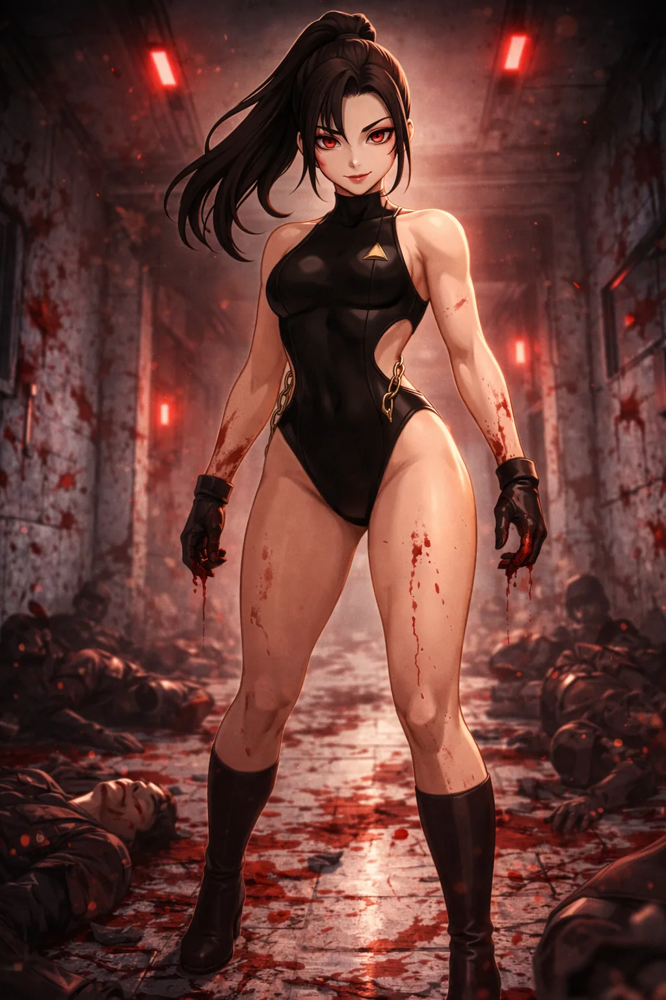

CHARACTER FILE

エンジェル・オブ・デス
Angel of Death
『微笑む死神、美貌と狂気のツインウィング』
基本情報
- 年齢
- 不明
- 体格
- 167cm／しなやかに鍛えられた美しい肉体
特性
デス・ブレッシング（死の祝福）相手に触れられるたび、その力の流れ、間合い、関節の癖を正確に刻み込んでいく特性。接触が重なるほど回避と返し技の精度は高まり、読みが完成した瞬間、相手はもっとも逃げにくい体勢へ誘い込まれる。
超必殺技
ラスト・エンジェルキス相手の踏み込みに合わせてすれ違うように背後へ回り込み、腕を絡め取って体勢を崩す。耳元で「Good night.」とささやいた次の瞬間、首を極めて動きを封じ、そのまま獲物に食らいつくように顔元へ噛みつく。恐怖と痛みで抵抗を奪い、静かに勝負を終わらせる冷酷な超必殺技。
性格
天然な微笑みと愛想の良さを持つが、その本質は冷徹な破壊者。双子の姉・ミステリアスシフターとは対照的に感情豊かに見えるが、実際には感情を持たない"純粋な暴力装置"。
ファイトスタイル
高速ステップとサブミッションテクニックを融合。力ではなく"正確さ"と"残酷さ"で相手を仕留める精密戦闘スタイル。
相性
- 有利な相手
- 重戦車型ファイター、持久型ファイター
- 不利な相手
- 超高速・幻惑型ファイター
プロフィール
「その微笑みは祝福か、死か──」 かつて“天使の進化”を掲げた計画の産物として生み出され、選ばれなかった“歪みの人形（ディストーションドール）”のひとり。姉・ミステリアスシフターとは対照的に、まるで“エンジェルスターズの模造品”のような華麗な振る舞いを見せるが、その本質は、**冷笑と殺意に満ちた“反転の天使”**である。 与えられた役割は「美しき祝福者」──だが彼女がリングで与えるのは、祝福ではなく死の安らぎだった。 脱走後は、仲間たちと共に身を隠しながら、滞在先の家主を殺しては住処を移るという日々を繰り返し、人としての境界すら曖昧になっていった。
口癖
「Good night.」